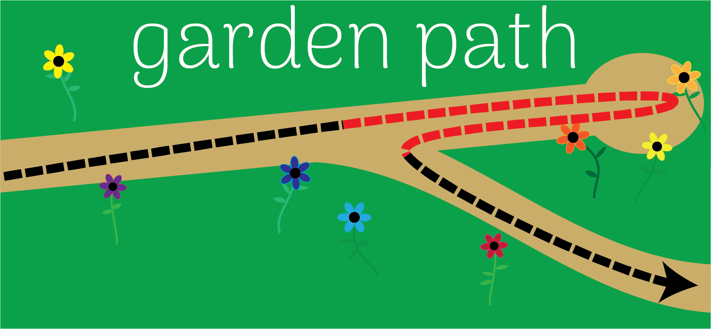

The important sentences in this experiment followed two different formats. Here are some examples:
- The professional agent knew that the actress was arriving tomorrow.
- The professional agent knew the actress was arriving tomorrow.
What do you think is the key difference between sentence 1 and sentence 2? Explain both what the linguistic difference is (i.e., at the word and grammar level, what difference do you see between these sentences), and what the psychological difference might be (i.e., what might happen differently in people's mind when they read sentence 2, versus when they read sentence 1).
There is no right or wrong answer for now, and your response to this question is not graded. I just want you to think about what the difference might be before you continue on.
Recall that the experiment included two kinds of sentences:
- The professional agent knew that the actress was arriving tomorrow morning.
- The professional agent knew the actress was arriving tomorrow morning.
The key difference between these is whether they include the connective (also called a complementizer) word, "that".
Sentence #1 we often call the "full" form, because it has the subordinate clause ???) including "that". Sentence #2 we often call the "reduced" form, because "that" is missing. So we could list the sentences like this:
- Full: The professional agent knew that the actress was arriving tomorrow morning.
- Reduced: The professional agent knew the actress was arriving tomorrow morning.
Remember that when a person reads a sentence, they don't see the whole sentence at once; they see one word at a time (approximately) before their eyes move to the next word.
This means that when someone reads the reduced version of the sentence, there is a moment where they are reading The professional agent knew the actress...
When you read The professional agent knew the actress, you might think the actress is the object (賓語) of knew. In other words, the person that the agent knew was the actress. And then you might think the sentence is over (after all, "The professional agent knew the actress" could be a complete sentence). What would happen next?
If you think that the actress is the person that the agent knew, and the sentence is over, then when you suddenly read was (The professional agent knew the actress was...), you might get confused. You probably thought the sentence was over, so you will be surprised to see another word. And you might have to re-interpret the sentence in order to figure out what it means. You will have to realize the sentence is not actually saying that the agent knew the actress; rather, the thing the agent knows is the fact that the actress will arrive tomorrow morning. (Maybe the agent has never met the actress and doesn't know her.)
On the other hand, none of that stuff will happen when reading the full version of the sentence. When you read The professional agent knew that the actress..., you know that "the actress" is not the object of the verb (it can't be, because of the "that" there). And you know the sentence is not over yet, because The professional agent knew that the actress... is not a complete sentence.
We can think about this via a metaphor. When you are reading the reduced version of the sentence and you read The professional agent knew the actress, there are two ways you can understand the sentence: you can decide that the actress is the person who the agent knows, or you can decide that the sentence is not complete yet (i.e., decide that "actress" is the subject of a subordinate clause/ ??). It's kind of like you're walking in a beautiful garden and the path splits two ways, and you need to choose which way to go: you can follow one path (the path where you interpret "actress" as the object of "knew"), or you can follow the other path (the path where you interpret "actress" as the subject of a subordinate clause). You might be tempted to take the first path (where "actress" looks like the object of "knew"), because that's the simpler and more common way to interpret the sentence. But after you take a few steps down this path, you might read the next word ("was") and realize that you took the wrong path! You will be like, "Oops!", and need to turn around and go back to the right path.

That's why this kind of research design is called the garden path effect. It's a way to measure what you do when you initially mis-understand a sentence (i.e., you think it means one thing) and then you realize your understanding was wrong, and you have to go back and change the way you understood it.
Remember that I predicted you might get surprised when you read was in the reduced version of the sentence, but not the full version. The garden path effect is based on the comparison between these. I want to compare how long it took you to read was in the reduced version, versus how long it took you to read was in the full version. If you took much longer to read was in the reduced version than it took you to read the exact same word in the full version, we say that's a garden path effect.
(Note that an "effect" is always based on comparing two different numbers! Remember when we talked about priming: the "priming effect" happens when responses to related targets are slower than responses to unrelated targets. Likewise, the "garden path effect" happens when people read the critical word in the reduced sentence more slowly than they read the critical word in the full sentence.)
We are able to measure how long it took you to read each word in the sentence in this experiment, because you pressed a button for each word. Therefore, the amount of time from when you pressed the button to see a word (like was) until the time you pressed the button to see the next word, is your reading time. This experiment method is called self-paced reading, because you read at your own pace. If you're interested in more information about self-paced reading, you can see the following article:
- Jegerski, J. (2014). Self-paced reading. In J. Jegerski & B. VanPatten (Eds.), Research methods in second language psycholinguistics (pp. 20-49). New York: Routledge.
Now we finally reach the question.
Draw a graph of what you expect the result of this experiment to look like.